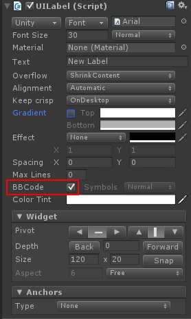
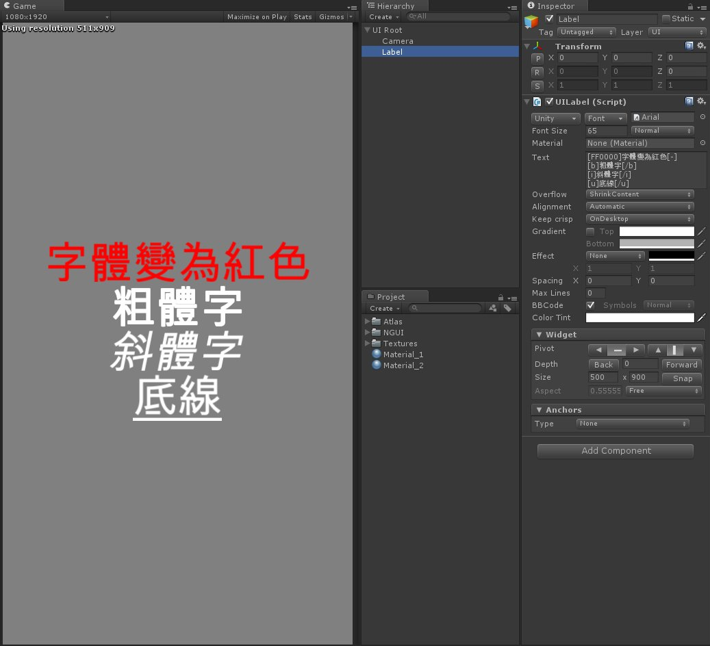

今天剛好需要對 UILabel 中的文字做自定義顏色或變化
於是上網查詢到了這個方法
在場景中新建一個 Label 並看一下 UILabel 腳本中的 BBCode 屬性

勾選這個 BBCode 屬性後就可以使用 BBCode 代碼來對文字做特殊功能
像是粗體、斜體、底線、字型顏色…等
下面來看一下大致的應用方式

這裡是在維基百科上查到的介紹
有興趣可以閱讀
http://zh.wikipedia.org/wiki/BBCode